He waited 10 years
Every evening for ten years, this dog went to the train station.

The man he waited for was dead.
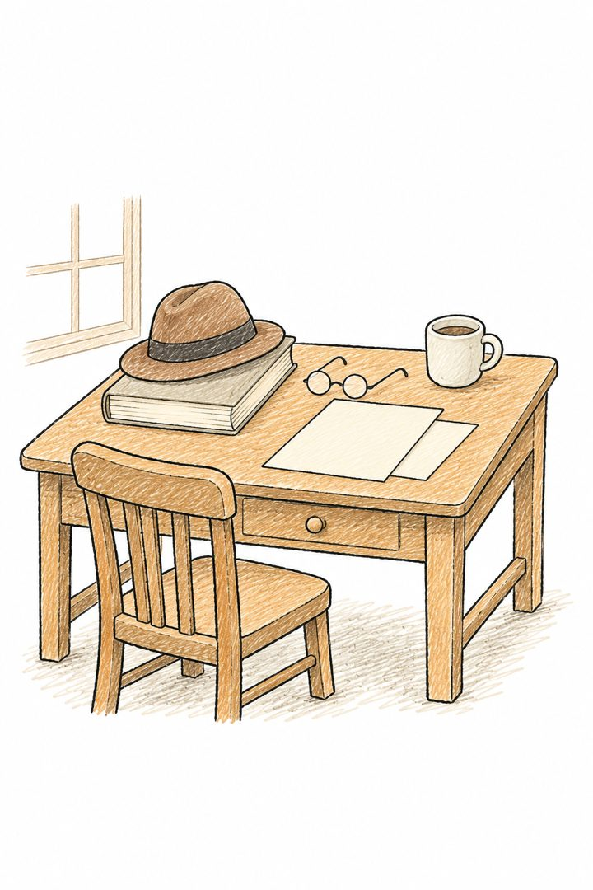
His name was Hachiko. Every evening, he met the professor’s train.
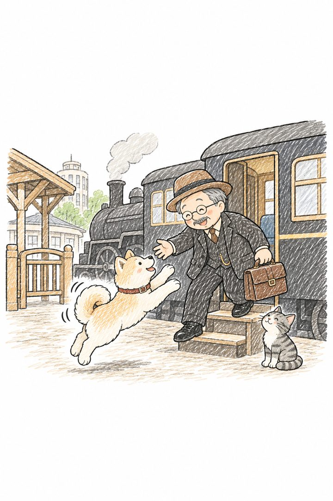
Then one day in 1925, the professor wasn’t on it. He had died at work.
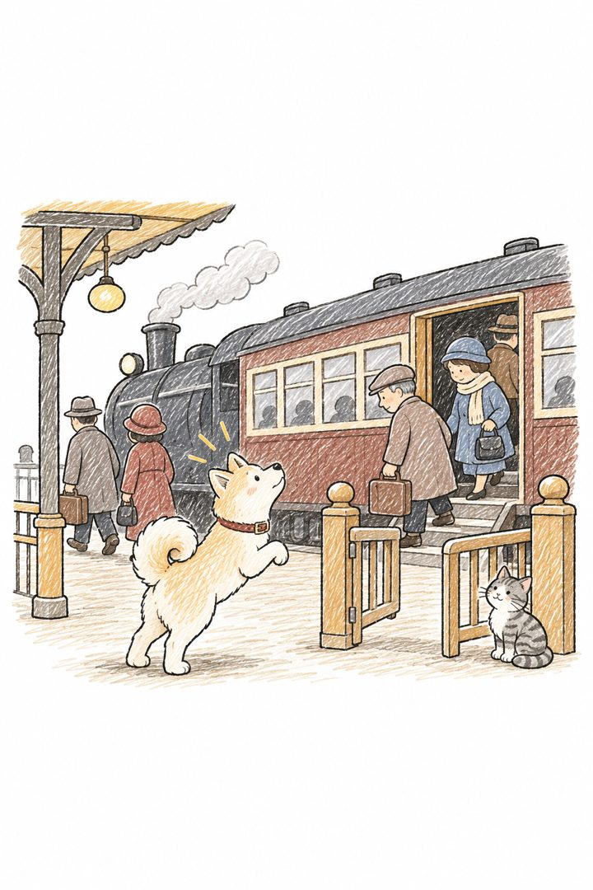
A station cat said, “He’s not coming back, Hachi. Go home.”
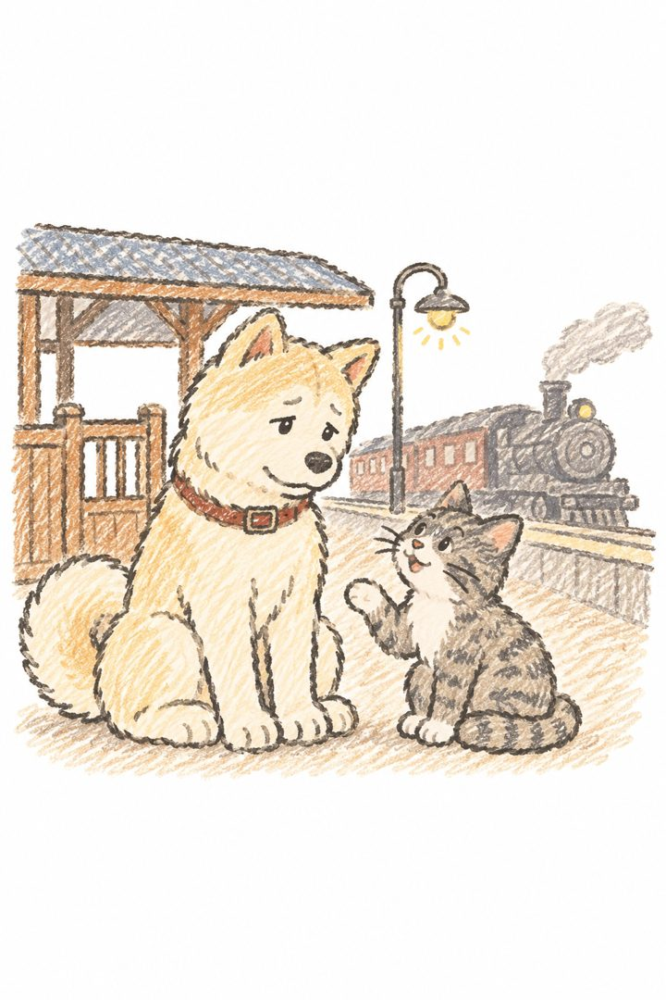
Hachiko said, “Then who will be here when he does?”
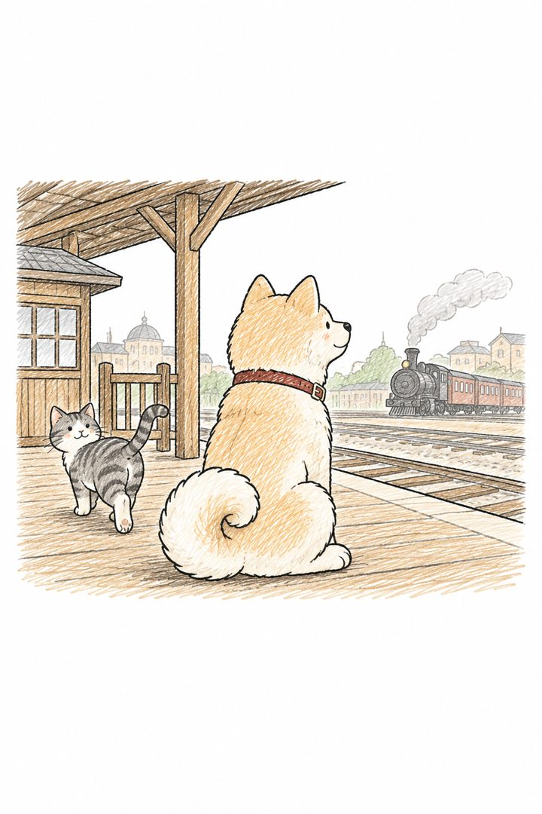
Year one, people chased him away.
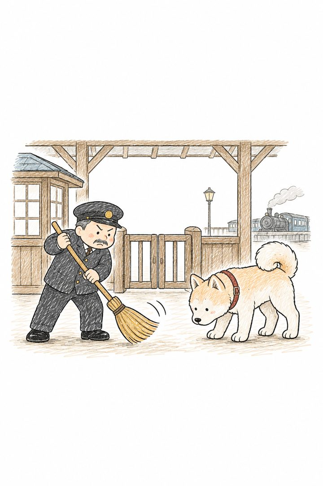
Year seven, a newspaper told his story.
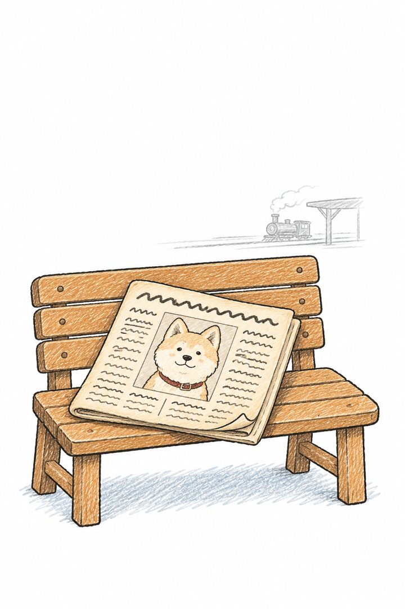
Strangers brought him food.
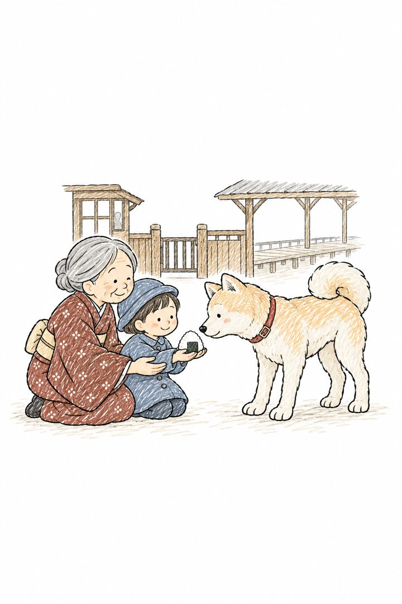
Maybe you know this wait. You still check your phone. You still save their seat.
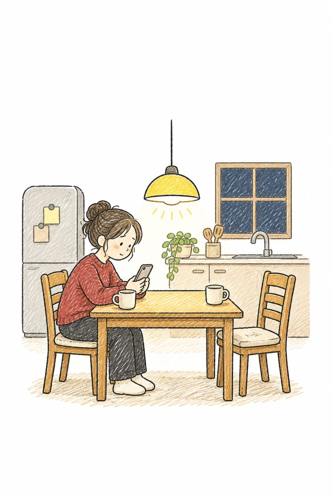
In 1934, they built his statue at the station. Hachiko sat right beside it.
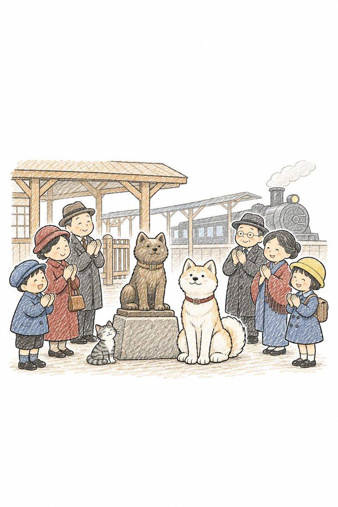
A year later, he died near the station, still waiting.
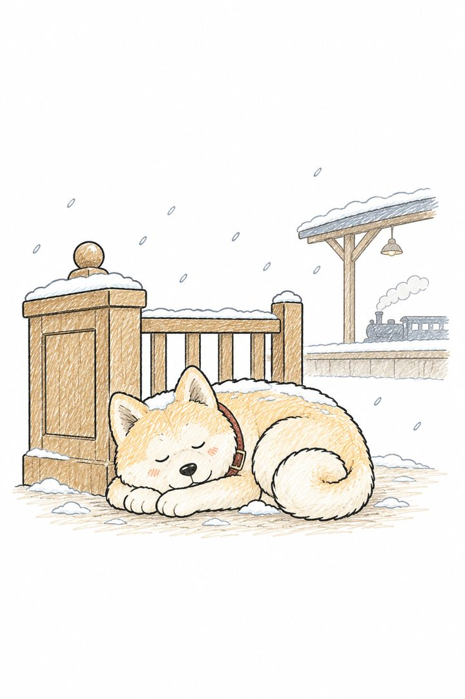
The cat is made up. Hachiko is real.
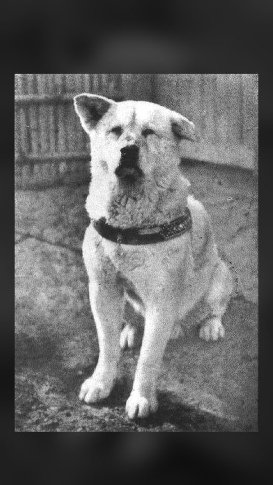
In 2015, they made one more statue: Hachiko jumping up to the professor. Together at last.
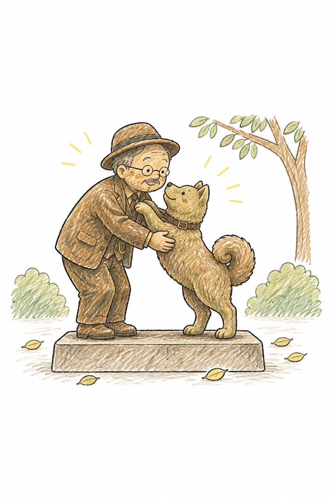
Who are you still waiting for?
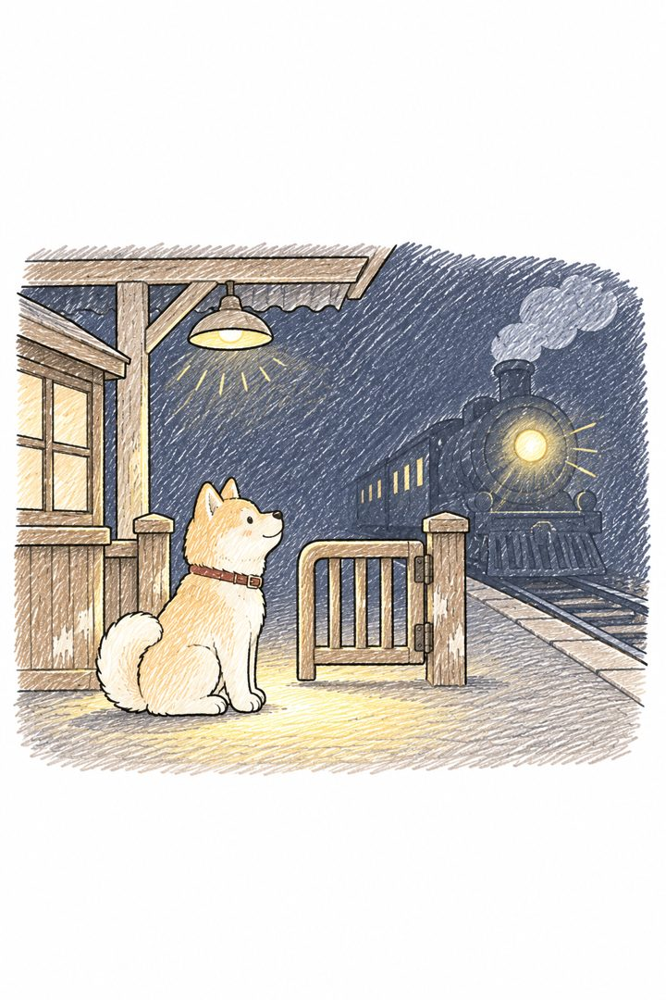
Based on a true story. The station cat and some scenes are imagined; the photo is a real 1930s picture (public domain).